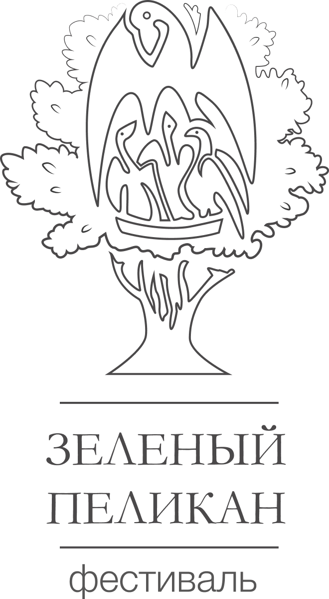

Конкурс для молодых исследователей, дизайнеров и инженеров, создающих проекты для устойчивого будущего городской среды.
Конкурс проводится в рамках фестиваля «Зелёный пеликан». Лучшие проекты получат поддержку экспертов и возможность реализации на территории кампуса и городских пространств Санкт-Петербурга.
Школьники, студенты, аспиранты, молодые специалисты до 35 лет. Индивидуально или в командах до 5 человек.
Проекты зелёных крыш, вертикального озеленения, биоразлагаемых материалов, интеграции природы в городскую застройку.
Городское огородничество, гидропоника, автоматизированные системы ухода за растениями, энергоэффективные теплицы.
Переработка отходов, мониторинг окружающей среды, применение LLM и дистанционного зондирования для экологических задач.
Заполнение онлайн-формы, прикрепление описания проекта и презентации (до 10 слайдов).
Оценка проектов экспертной комиссией. Отбор финалистов для очной защиты.
Очная защита перед жюри. Выставка проектов на площадке Открытого кампуса.
Церемония вручения дипломов, призов и сертификатов. Рекомендации к реализации.
Специальные номинации от партнёров: «Лучший студенческий проект», «Эко-инновация», «Приз зрительских симпатий».
Полный состав жюри будет опубликован на сайте за месяц до финала.
Да, если проект не был реализован и не получал финансирование более 50 000 ₽.
Презентация в PDF, до 10 слайдов. Рекомендуется приложить эскизы, расчёты, видео (опционально).
Очная защита обязательна для финалистов. Для иногородних возможно онлайн-участие по согласованию.
📍 РГПУ им. А.И. Герцена
наб. реки Мойки, 48–52